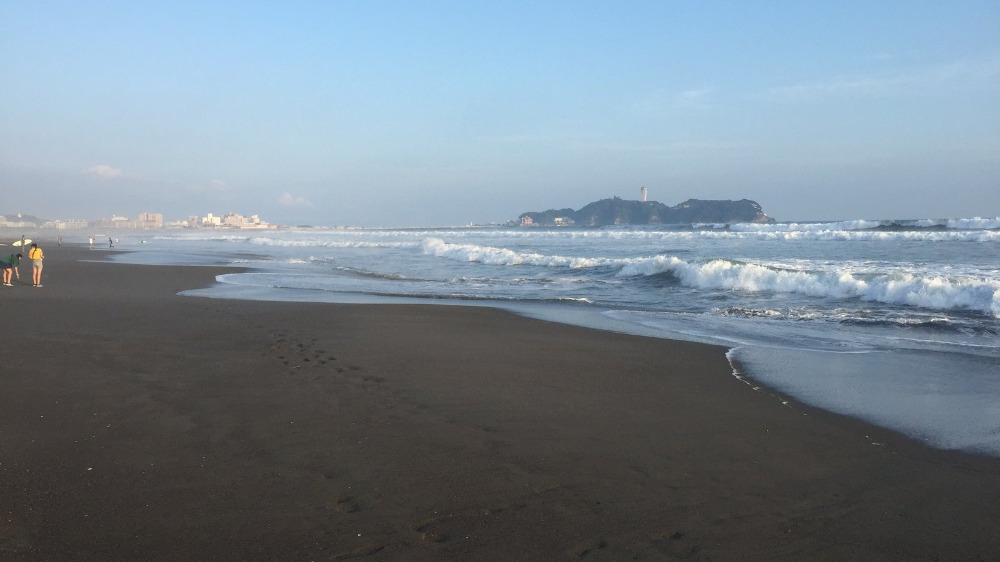
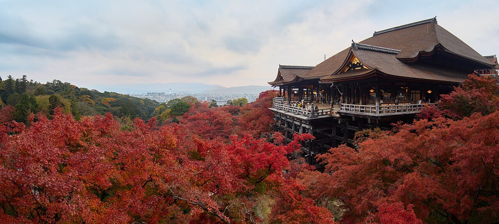

YELLOWSUBMARINER / PERSONAL WEBSITE个人网站 VOL. 01 — 2026

YellowSubmariner 败犬女主太多了！
华南理工大学数据科学与大数据技术 · 2025级本科生
SCUT
2025 — NOW
2025 — NOW
记录与分享
日常与照片TRAVEL, BOOKS & NOTES论文与实验课程与代码


MAKEINE / TOYOHASHI
败犬女主太多了！
01 / ARTICLES
最新文章.
五个栏目的开篇示例。
02 / TRAVEL · JAPAN
日本，山海之间.
山海、四季与城市的光。摄影来源 ↗
ACG 巡礼灵感 江之岛 / 千叶 / 丰桥 ＋
03 / READING
阅读
书摘、书评与阅读笔记。
READING NOTES 01 / 03
小说与轻小说
故事、角色与读后感。
阅读分类
04 / RESEARCH
科研.
论文阅读、项目与实验记录。
RESEARCH NOTES 内容分类
01
论文阅读
论文摘要与阅读笔记。
02
项目进展
项目过程与阶段总结。
03
实验记录
方法、结果与复现记录。
05 / LEARNING
学习.
课程笔记、代码与复习整理。
01·
数学
高等数学 · 线性代数 · 概率统计
02·
编程
Python · 数据结构与算法
03·
专业基础
数据库 · 数据分析与建模
按课程与主题更新。
AFTER SCHOOL / PRIVATE CINEMA
ACG 放映室。
作品收藏
青春猪头少年 · 春物 · 败犬女主太多了
作品收藏作品视觉版权归各自权利方。